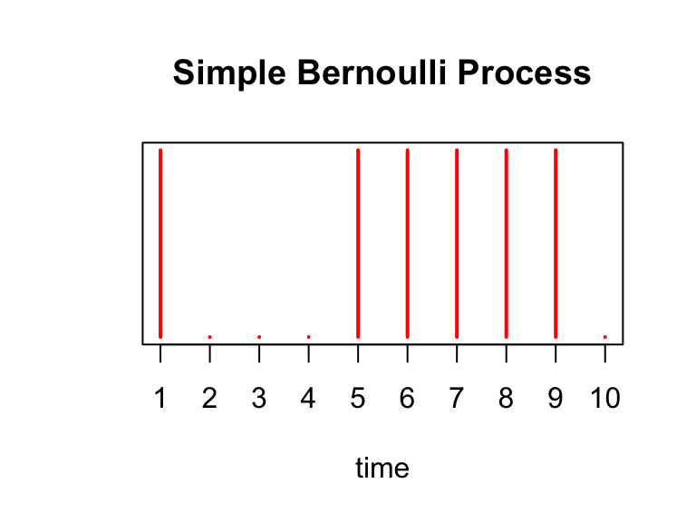
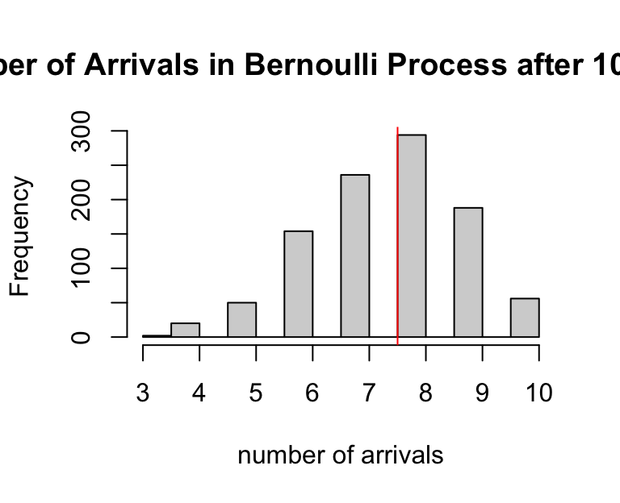
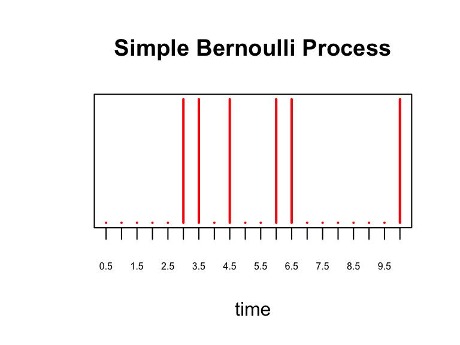
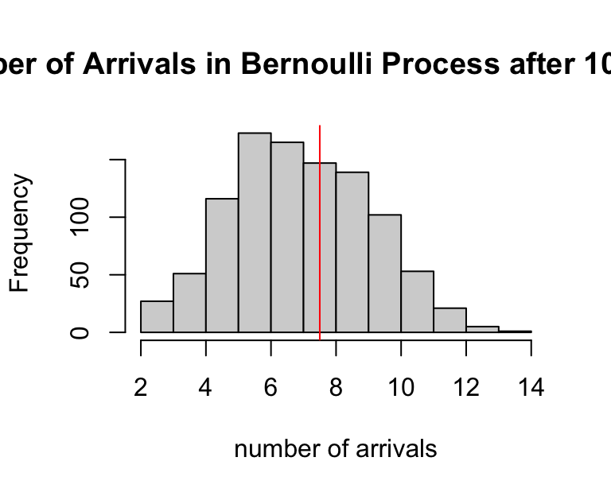
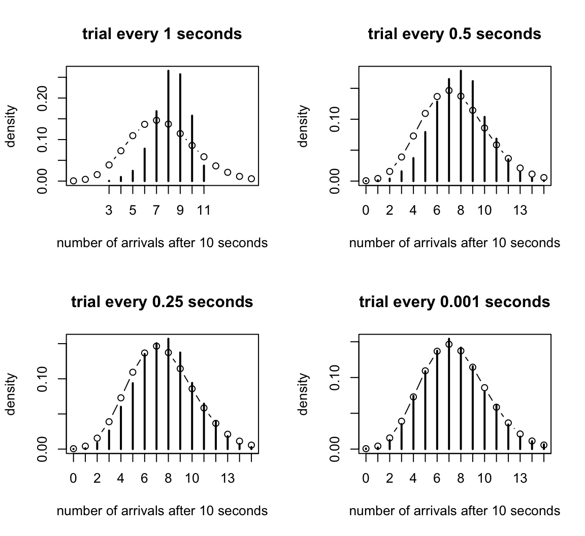

Last updated: 2026-02-05
Checks: 5 2
Knit directory: fiveMinuteStats/analysis/
This reproducible R Markdown analysis was created with workflowr (version 1.7.1). The Checks tab describes the reproducibility checks that were applied when the results were created. The Past versions tab lists the development history.
The R Markdown file has unstaged changes. To know which version of
the R Markdown file created these results, you’ll want to first commit
it to the Git repo. If you’re still working on the analysis, you can
ignore this warning. When you’re finished, you can run
wflow_publish to commit the R Markdown file and build the
HTML.
Great job! The global environment was empty. Objects defined in the global environment can affect the analysis in your R Markdown file in unknown ways. For reproduciblity it’s best to always run the code in an empty environment.
The command set.seed(12345) was run prior to running the
code in the R Markdown file. Setting a seed ensures that any results
that rely on randomness, e.g. subsampling or permutations, are
reproducible.
Great job! Recording the operating system, R version, and package versions is critical for reproducibility.
To ensure reproducibility of the results, delete the cache directory
bernoulli_poisson_process_cache and re-run the analysis. To
have workflowr automatically delete the cache directory prior to
building the file, set delete_cache = TRUE when running
wflow_build() or wflow_publish().
Great job! Using relative paths to the files within your workflowr project makes it easier to run your code on other machines.
Great! You are using Git for version control. Tracking code development and connecting the code version to the results is critical for reproducibility.
The results in this page were generated with repository version b794700. See the Past versions tab to see a history of the changes made to the R Markdown and HTML files.
Note that you need to be careful to ensure that all relevant files for
the analysis have been committed to Git prior to generating the results
(you can use wflow_publish or
wflow_git_commit). workflowr only checks the R Markdown
file, but you know if there are other scripts or data files that it
depends on. Below is the status of the Git repository when the results
were generated:
Ignored files:
Ignored: analysis/bernoulli_poisson_process_cache/
Untracked files:
Untracked: temp_cache/
Unstaged changes:
Modified: Makefile
Modified: analysis/bernoulli_poisson_process.Rmd
Modified: analysis/index.Rmd
Note that any generated files, e.g. HTML, png, CSS, etc., are not included in this status report because it is ok for generated content to have uncommitted changes.
These are the previous versions of the repository in which changes were
made to the R Markdown
(analysis/bernoulli_poisson_process.Rmd) and HTML
(docs/bernoulli_poisson_process.html) files. If you’ve
configured a remote Git repository (see ?wflow_git_remote),
click on the hyperlinks in the table below to view the files as they
were in that past version.
| File | Version | Author | Date | Message |
|---|---|---|---|---|
| html | 5f62ee6 | Matthew Stephens | 2019-03-31 | Build site. |
| Rmd | 0cd28bd | Matthew Stephens | 2019-03-31 | workflowr::wflow_publish(all = TRUE) |
| html | 34bcc51 | John Blischak | 2017-03-06 | Build site. |
| Rmd | 5fbc8b5 | John Blischak | 2017-03-06 | Update workflowr project with wflow_update (version 0.4.0). |
| Rmd | 391ba3c | John Blischak | 2017-03-06 | Remove front and end matter of non-standard templates. |
| html | 8e61683 | Marcus Davy | 2017-03-03 | rendered html using wflow_build(all=TRUE) |
| Rmd | d674141 | Marcus Davy | 2017-02-26 | typos, refs |
| html | c3b365a | John Blischak | 2017-01-02 | Build site. |
| Rmd | 67a8575 | John Blischak | 2017-01-02 | Use external chunk to set knitr chunk options. |
| Rmd | 5ec12c7 | John Blischak | 2017-01-02 | Use session-info chunk. |
| Rmd | f875d4f | mbonakda | 2016-02-06 | section title |
| Rmd | c2c298c | mbonakda | 2016-02-06 | plot titles |
| Rmd | 9ea41c3 | mbonakda | 2016-02-06 | fix plot titles |
| Rmd | 22b5540 | mbonakda | 2016-02-06 | add bernoulli limit to poisson process |
See here for a PDF version of this vignette.
This document assumes basic familiarity with the Poisson process.
To gain intuition about the Poisson process, it is useful think of it as a continuous time version of the Bernoulli process. We first review some basics about the Poisson process and settle on notation before moving on to an illustrative example.
For a Poisson process, arrivals may occur at any arbitrary time \(t \geq 0\). One way to specify a Poisson process is by the counting process \(N_t\) denoting the number of arrivals up to and including time \(t\). For a Poisson process with rate parameters \(\lambda\), we have that \[N_t \sim \text{Poisson}(\lambda t)\]
Therefore, the expected number of time arrivals up to and including \(t\) is equal to \(E[N_t] = \lambda t\). In the examples that follow, we will assume our rate parameter \(\lambda\) is \(0.75\) arrivals per second, and we are interested in the number of arrivals after 10 seconds, \(N_{10}\). In this example, we expect and average of \(10\times\lambda = 7.5\) arrivals after \(10\) seconds.
Now we will describe the discrete-time analog of the Poisson process, the Bernoulli process. Throughout the next section, our aim is to construct a Bernoulli process so that the expected number of arrivals after \(10\) seconds matches the Poisson process above. We will then investigate what happens to the Bernoulli process as we increase the number of discrete events within the \(10\) seconds while maintaining the expected number of arrivals at \(7.5\).
The Bernoulli process is a sequence of independent random variables \(X_1,X_2,X_3,\ldots\) where \(X_i\) is \(1\) with probability \(p\) and \(0\) with probability \(1-p\). This is the mathematical abstraction of coin tossing.
Assume that we perform a Bernoulli trial every second for 10 seconds. We will think of each \(X_i=1\) as an arrival. Recall that since our random variables \(X_i\) are Bernoulli(\(p\)), the sum \(S_{10} = \sum_{i=1}^{10} X_i\) is Binomial(10, \(p\)). The expected value of \(S_{10}\) is therefore \(10p\) arrivals in \(10\) seconds. To match the Poisson process above, we set \(p=0.75\) so that \(E[S_{10}] = 7.5\).
Below we simulate this process with \(p=0.75\), drawing a red line at time point \(i\) if \(X_i = 1\):
X = rbinom(10, 1, 0.75)
plot(X, xaxt='n', yaxt='n', type='h', ylim=c(0,1),
col='red', lwd=2, ylab='', xlab='time', main='Simple Bernoulli Process')
axis(1, at = 1:10, labels=as.character(1:10))
There are \(\sum_{i=1}^{10} X_i =\) 6 arrivals in our experiment above. We simulate this Bernoulli process 1000 times below, and a plot a histogram of the \(S_{10}\)’s obtained from each trial. We draw a red line at the expected number of arrivals, 7.5.
hist(sapply(1:1000, function(x) sum(rbinom(10,1,0.75))), xlab='number of arrivals', main='Number of Arrivals in Bernoulli Process after 10 seconds')
abline(v=7.5, col='red')
Note that for this process, time is discrete – events only happen at the integers \(1,2,\ldots 10\), while the Poisson process models events happening at any time \(t \in [0,10]\). We could next think of performing a Bernoulli trial more rapidly, like every 0.5 seconds, or every 0.01 seconds, and so on. Continuing in this fashion, we would eventually (in the limit) have a continuous time process where arrivals could happen at any moment in time. We will now investigate what happens as we “shrink” the Bernoulli process in this way, allowing for more trials within the \(10\) seconds.
Instead of performing a Bernoulli trial at every second, assume we perform one at every \(\delta\) seconds where, in this example, \(\delta < 1\). This would make the total of trials \(n = \frac{10}{\delta}\). Without making any other changes, \(S_{10}\) would be a Binomial(\(10 /\delta\), \(0.75\)) random variable with the expected number of arrivals equal to: \[E[S_{10}] = \frac{p\times 10}{\delta} = \frac{0.75\times 10}{\delta}\]
To maintain the average of \(7.5\) arrivals in \(10\) second, we would need to shrink the probability so that \[ \begin{aligned} E[N_{10}] &= E[S_{10}] \\ 10 \lambda &= \frac{10\times p}{\delta} \\ \Rightarrow p &= \lambda \delta \\ &= 0.75\delta \end{aligned} \]
where we substituted \(\lambda = 0.75\) in the last line. Continuing our example, instead of every 1 second, supposed we perform a Bernoulli trial every \(\delta = 0.5\) seconds for \(10\) seconds. Then, to maintain the expected number of arrivals, we set \(p = 0.75\times 0.5 = 0.375\). We plot this process below:
X = rbinom(20, 1, 0.375)
plot(X, xaxt='n', yaxt='n', type='h', ylim=c(0,1),
col='red', lwd=2, ylab='', xlab='time', main='Simple Bernoulli Process')
axis(1, at = 0:20, labels=as.character(seq(0, 10, by=0.5)), cex.axis=0.5)
and show the histogram of 1000 simulations of \(S_{10}\) for this process:
hist(sapply(1:1000, function(x) sum(rbinom(20,1,0.375))), xlab='number of arrivals', main='Number of Arrivals in Bernoulli Process after 10 seconds')
abline(v=7.5, col='red')
In the previous section we saw that as we perform more Bernoulli trials in the same \(10\) seconds (i.e. a trial every \(\delta = 0.5\) seconds), we had to decrease the success probability \(p\) to maintain \(E[S_t] = E[N_t]\), where \(N_t\) was the number of arrivals from the Poisson process from the first section of this note.
The key result is this: as \(\delta \rightarrow 0\), we have that the \(P(S_t = k) = P(N_t = k)\) and, in this sense, the Bernoulli process converges to the Poisson process. We illustrate this in the plots below. Recall that \(N_t \sim \text{Poisson}(\lambda t)\).
As we set \(\delta\) to smaller and smaller values, in each plot we show a histogram of 5000 simulated \(S_{10}\)’s along with the Poisson density of \(N_{10}\). We see that as \(\delta\) gets smaller, the histogram converges to the Poisson density.
In the simulation above, we perform Bernoulli trials every \(\delta = 2^{-j}\) seconds for increasing values of \(j\). This characterizes how fast we “shrink” the Bernoulli process.
TOTAL.TIME <- 10
lambda <- 0.75 # poisson rate paramter
shrink.vec <- 0:10
bern.process <- vector("list", length(shrink.vec))
for(idx in seq_along(shrink.vec)) {
j <- shrink.vec[idx]
p <- lambda*2^(-j) # bernoulli parameter
time <- seq(0, TOTAL.TIME, by=2^(-j)) # time steps
bern.process[[idx]] <- sapply(1:5000, function(x) rbinom(length(time), 1, p))
}
# compare Bernoulli histogram to Poisson density
compare.density <- function(b.process, delta, inspect.at=10) {
num.row <- dim(b.process)[1]
# compute bernoulli counts
tt <- table(apply(b.process, 2, cumsum)[num.row,])
# compute poisson density
pois.density <- dpois(0:80, inspect.at*lambda)
# plot
plot(tt/sum(tt), main=paste("trial every", round(delta,4), "seconds"), xlab='number of arrivals after 10 seconds', ylab='density', xlim=c(0,15), ylim=range(c(tt/sum(tt), pois.density)))
lines(0:80,pois.density, 'b')
}
par(mfrow=c(2,2))
compare.density(bern.process[[1]], 2^(-shrink.vec[1]))
compare.density(bern.process[[2]], 2^(-shrink.vec[2]))
compare.density(bern.process[[3]], 2^(-shrink.vec[3]))
compare.density(bern.process[[11]], 2^(-shrink.vec[11]))
sessionInfo()
# R version 4.3.3 (2024-02-29)
# Platform: aarch64-apple-darwin20 (64-bit)
# Running under: macOS 15.7.1
#
# Matrix products: default
# BLAS: /Library/Frameworks/R.framework/Versions/4.3-arm64/Resources/lib/libRblas.0.dylib
# LAPACK: /Library/Frameworks/R.framework/Versions/4.3-arm64/Resources/lib/libRlapack.dylib; LAPACK version 3.11.0
#
# locale:
# [1] en_US.UTF-8/en_US.UTF-8/en_US.UTF-8/C/en_US.UTF-8/en_US.UTF-8
#
# time zone: America/Chicago
# tzcode source: internal
#
# attached base packages:
# [1] stats graphics grDevices utils datasets methods base
#
# loaded via a namespace (and not attached):
# [1] vctrs_0.6.5 cli_3.6.5 knitr_1.50 rlang_1.1.6
# [5] xfun_0.52 stringi_1.8.7 promises_1.3.3 jsonlite_2.0.0
# [9] workflowr_1.7.1 glue_1.8.0 rprojroot_2.0.4 git2r_0.33.0
# [13] htmltools_0.5.8.1 httpuv_1.6.14 sass_0.4.10 rmarkdown_2.29
# [17] evaluate_1.0.4 jquerylib_0.1.4 tibble_3.3.0 fastmap_1.2.0
# [21] yaml_2.3.10 lifecycle_1.0.4 whisker_0.4.1 stringr_1.5.1
# [25] compiler_4.3.3 fs_1.6.6 Rcpp_1.1.0 pkgconfig_2.0.3
# [29] later_1.4.2 digest_0.6.37 R6_2.6.1 pillar_1.11.0
# [33] magrittr_2.0.3 bslib_0.9.0 tools_4.3.3 cachem_1.1.0